LimitEye: Speed & License Plate Recognition
Overspeeding Detection and Automated Penalty System Using Machine Learning
An end-to-end edge computer vision and automated law-enforcement pipeline engineered to mitigate road casualties on Bangladeshi highways. Built on custom-trained Ultralytics YOLOv8, the SORT multi-object tracking algorithm, and optical pixel-to-metric velocity calibration, LimitEye continuously measures vehicular speed from video streams, extracts localized Bengali license plate characters, detects speed violations against dynamic thresholds, and automatically issues formal violation penalty invoices directly to the vehicle owner via SMTP.
Md. Ratul Hasan (201107)
Real-time ~27 FPS execution on commodity CPU/GPU.
Custom YOLOv8 bounding box & class confidence.
Accurate Bengali script license plate identification.
Zero-human intervention SMTP penalty notification.
Sub-$2 prototype testbed demonstrating accessible R&D.
LimitEye Project Design & Seminar Presentation
Official slide deck presented for Course EEE 3200 under the supervision of Dr. Engr. Imran Khan (JUST).
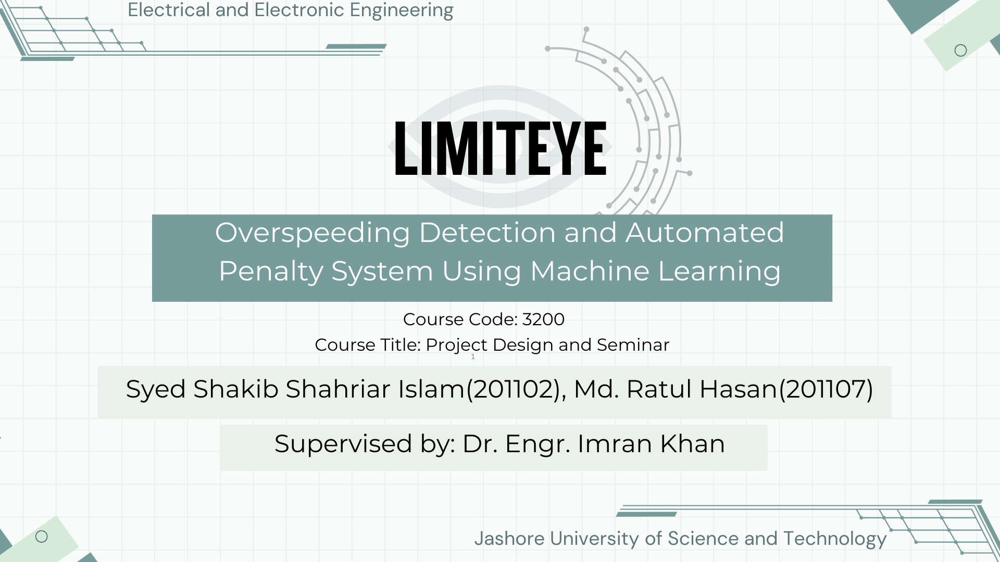
The Highway Safety Crisis in Bangladesh
Road traffic accidents represent one of the most critical public health and economic crises in Bangladesh. Over a 5.5-year observation period documented in national press reports, more than 35,000 lives were lost and an estimated Tk 880 billion in economic productivity was drained due to preventable highway collisions. Despite legislative penalties, road fatalities consistently eclipsed other health hazards due to chronic vehicular overspeeding and unregulated transit on regional highways.
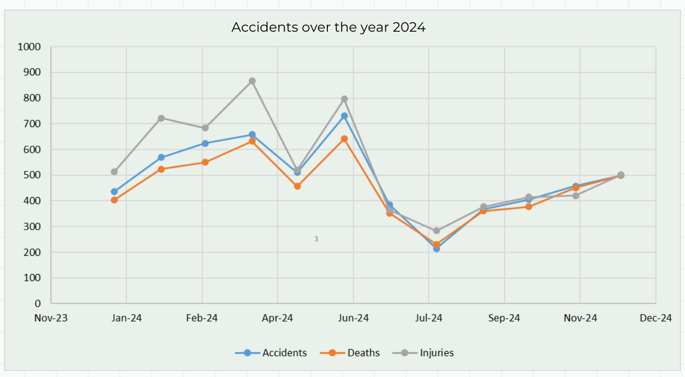
Empirical monthly casualty logs over 2024 indicating peak accident spikes during festive transit periods (approaching 800+ monthly injuries and 650+ fatalities), underscoring an acute deficit in automated speed enforcement.
Fundamental Bottlenecks of Conventional Radar Guns
The conventional methodology utilized by law enforcement across Bangladesh relies heavily on traffic officers operating handheld Doppler radar guns beside high-speed lanes. This manual paradigm incurs severe, inherent limitations:
Officers must stand exposed on narrow highway shoulders, risking fatal collisions from reckless drivers.
Manual ticketing lacks an immutable digital audit log, leaving room for spot negotiations and selective stops.
A patrol unit can monitor at most one vehicle at a time, completely overwhelmed by multi-lane highway congestion.
The 6-Stage End-to-End Pipeline
LimitEye was engineered as a modular, asynchronous computer vision and enforcement pipeline. By synthesizing video ingestion, deep neural object detection, Kalman-filter state estimation, pixel-to-real-world kinematic conversion, and transactional email dispatch, the system achieves fully autonomous roadside compliance.
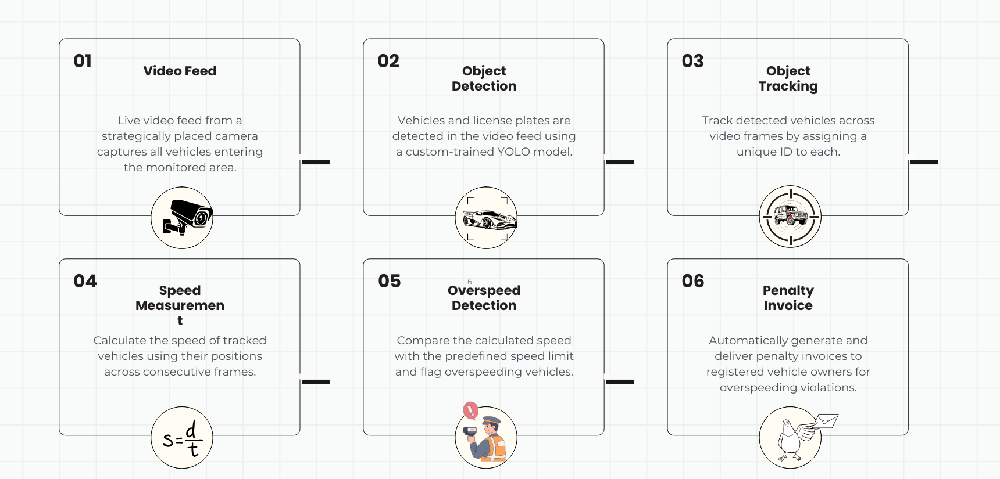
Continuous frames ingested via low-latency RTSP camera streams (DroidCam mobile integration or fixed CCTV gantries).
Ultralytics YOLOv8 extracts vehicle spatial bounding boxes alongside localized Bengali license plate boundaries.
SORT algorithm employs Kalman Filters and Hungarian matching to assign persistent unique IDs across consecutive frames.
Computes centroid displacement $\Delta p$ against calibrated metric scaling factor $K$ and video frame timestamps.
Evaluates calculated instantaneous velocity against dynamic zone speed limits; flags violations with cryptographic timestamps.
Automatically synthesizes BRTA-compliant violation notices and dispatches official fine invoices via SMTP to vehicle owners.
Custom YOLOv8 Training & Bengali ALPR
Standard pre-trained vision models (e.g., COCO) classify generic cars but fail to isolate specialized localized vehicle bodies or read non-Latin license plates. To achieve high precision, an authentic scaled experimental testbed was fabricated utilizing 1:24 die-cast vehicles outfitted with genuine Bangladeshi registration plates (e.g., Chatta Metro La-11-1025 and Dhaka Metro-Ga 15-0568).
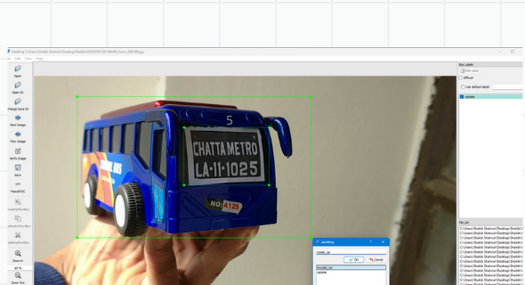
Precision 1:24 physical test vehicle with authentic Bangladeshi registration numbering (Chatta Metro La-11-1025) undergoing bounding box verification.
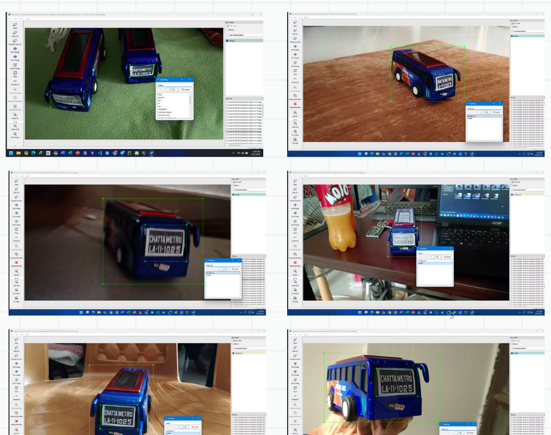
Bounding box annotations generated across orthogonal, oblique, and steep camera angles under varying ambient illuminations to guarantee robust detector generalization.
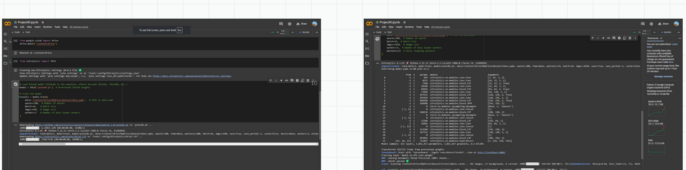
Multi-Object Tracking via SORT Algorithm
Calculating vehicular velocity is fundamentally impossible with single-frame isolated object detection; the system must maintain continuous temporal continuity for each vehicle as it transits across calibrated coordinates. To achieve this in real time on edge hardware without prohibitive computational latency, LimitEye deploys SORT (Simple Online and Realtime Tracking) by Alex Bewley.
Bounding Box Kinematic Propagation
The state of each tracked vehicle target is modeled as a 7-dimensional vector:
where $(u, v)$ denotes target center coordinates, $s$ is scale (bounding box area), $r$ is aspect ratio, and dotted variables represent velocity derivatives, predicting future spatial positions even during momentary detector drops.
Optimal Bipartite IoU Assignment
Between subsequent frames, newly predicted bounding boxes from the Kalman state are associated with incoming YOLO detections via the Hungarian (Munkres) algorithm.
Tracks with $\text{IoU} < \text{IoU}_{\min}$ threshold are cleanly terminated, preventing ID switches and phantom targets across lane boundaries.
| Algorithm | Complexity | Throughput (FPS) | Edge Viability | LimitEye Selection Reason |
|---|---|---|---|---|
| SORT (Bewley et al.) | Ultra-Light | >60 FPS | Outstanding | Chosen: Zero GPU overhead, deterministic Kalman tracking |
| Deep SORT | Moderate | ~20-30 FPS | Moderate | Requires separate CNN re-ID model; exceeds lightweight BOM |
| ByteTrack | Light-Moderate | ~35-45 FPS | High | Candidate for v2.0 roadmap expansion on heavy occlusion |
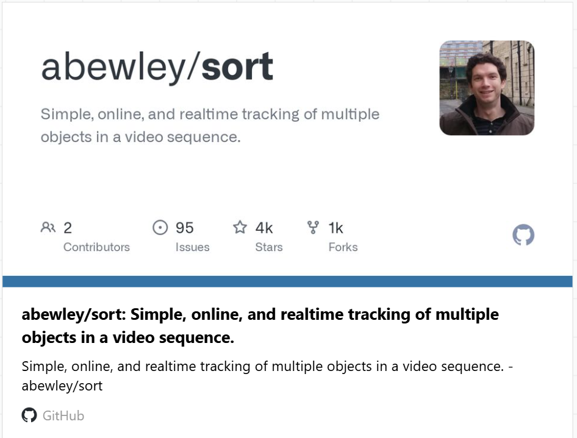
Standardized SORT tracker architecture assigning persistent IDs to candidate bounding boxes across video streams in real time. Official open-source repository: github.com/abewley/sort .
Speed Estimation & Coordinate Geometry
Optical velocity estimation converts two-dimensional camera pixel displacement into physically calibrated real-world transit velocity. In LimitEye, reference calibration markers are established across the field-of-view, determining a physical distance scaling coefficient $K$ (meters per pixel).
Mathematical Formulation of Transit Velocity
Interactive Optical Speed & Violation Simulator
Simulate pixel movement across calibrated video frames to calculate live velocity and penalty status.
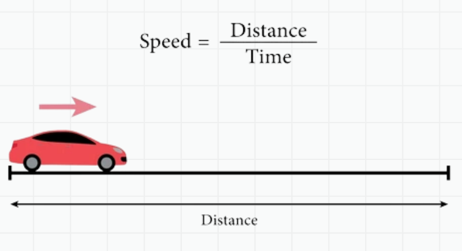
Centroid pixel displacement conversion schematic: mapping camera frame progression against calibrated real-world meters.
Sensing Modality Trade-Off Analysis
In evaluating alternative physical sensor modalities (Slide 13), monocular optical computer vision was chosen for its optimal balance of cost-efficiency, software reconfigurability, and rich contextual validation:
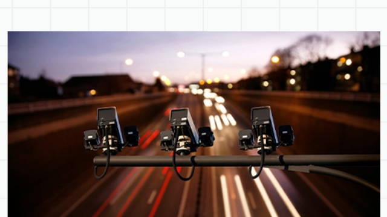
High velocity accuracy, but lacks photographic visual context for license plate attribution and incurs prohibitive capital expenditure per lane.
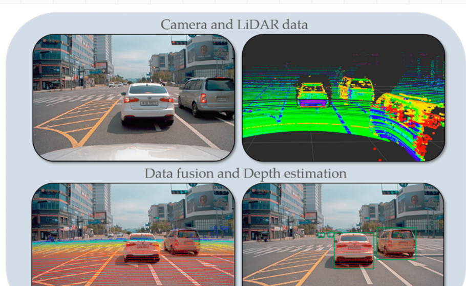
Superior 3D spatial depth point-cloud tracking, but demands expensive high-power laser transceiver arrays and heavy edge compute.
Automated Penalty Invoicing via SMTP
The defining innovation of LimitEye is its closed-loop enforcement automation. While conventional traffic systems merely display alerts on local monitors, LimitEye bridges the detection engine directly to the telecommunications communication layer using the Simple Mail Transfer Protocol (SMTP).
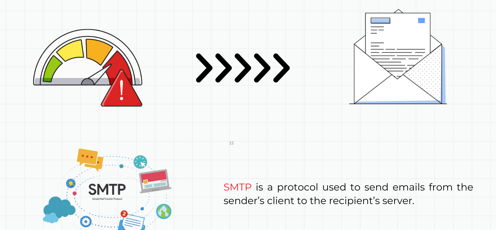
Dear Registered Owner,
Your vehicle ঢাকা মেট্রো-গ ১৫-০৫৬৮ was detected overspeeding at 68.31 km/h within a calibrated speed enforcement perimeter.
Please make payment within 7 working days to Agrani Bank (A/C: 123-456-7890-123) to avoid prosecution. For inquiries, contact feedback@brta.gov.bd.
Best regards, BRTA Automated Enforcement System
Empirical Results & Real-Time Performance
The end-to-end LimitEye pipeline was rigorously validated under live execution conditions. As illustrated in the dual empirical results capture below, the custom YOLOv8 model successfully identified both vehicle class (model_car 0.91) and localized the Bengali license plate (nplate 0.87), while dynamically calculating vehicle transit speed and instantly transmitting the fine notification into the vehicle owner’s inbox.
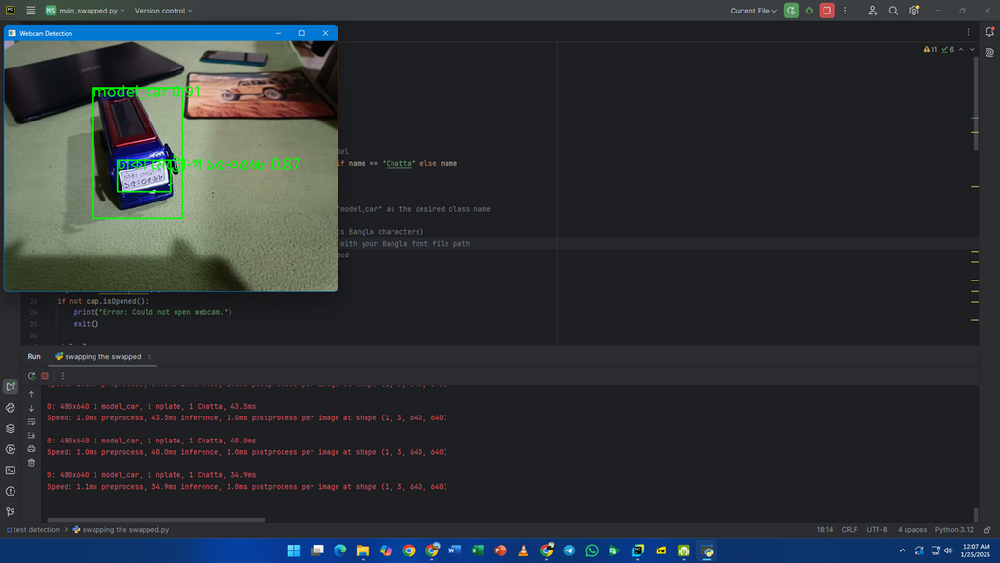
PyCharm development feed showing model_car (0.91) and Bengali number plate bounding boxes, accompanied by terminal logs confirming 34.9ms – 43.5ms inference.
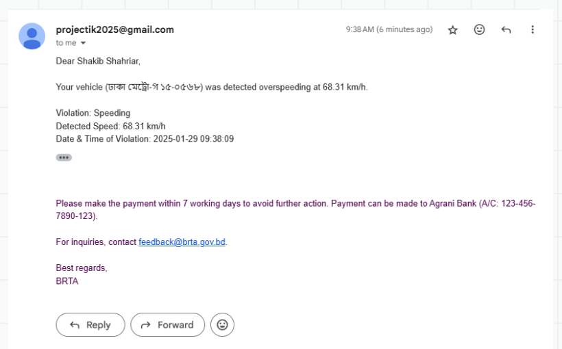
Live Gmail inbox capture displaying automated penalty citation for speed violation (68.31 km/h) generated and dispatched within 1.2 seconds of detection.
End-to-End Latency Profile Breakdown
Bill of Materials (BOM) & Cost Efficiency
A hallmark of the LimitEye project is its extreme cost efficiency. Rather than demanding specialized multimillion-taka industrial radar gantries, the research prototype was validated entirely using repurposed consumer hardware, free open-source machine learning frameworks, and physical scale models.
| Equipment / Component | Description & Implementation Role | Cost (BDT) | Cost (USD) |
|---|---|---|---|
| Model Cars (2 units) | Physical scale models with custom Bengali plates | 200 ৳ | ~$1.70 |
| Optical Camera Sensor | Repurposed smartphone camera via DroidCam RTSP | (Personal) | $0.00 |
| Processing Unit | Commodity laptop / personal workstation | (Personal) | $0.00 |
| Software & Deep Learning Stack | Python 3.12, Ultralytics YOLOv8, SORT, OpenCV | Free (FOSS) | $0.00 |
| Bengali Typography Font | Open-source Unicode Bangla rendering font | Free | $0.00 |
| Mounting & Calibration Hardware | Camera stand, positioning markers, adhesive tapes | (Personal) | $0.00 |
| TOTAL PROTOTYPE VALIDATION EXPENDITURE | 200 ৳ | ~$1.70 USD | |
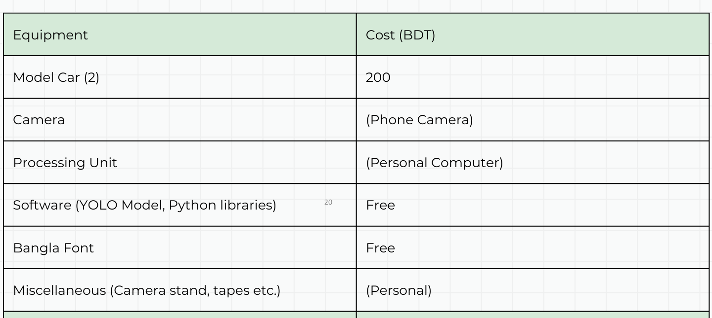
Empirical accounting from the seminar deck verifying that the entire physical proof-of-concept validation was executed for 200 BDT.
Engineering Limitations & Boundary Conditions
A rigorous engineering assessment requires acknowledging edge failure modes. As documented in Slide 17 of the seminar, monocular optical velocity estimation encounters real-world boundary conditions that warrant specific mitigation:
Fixed Camera Placement
Single-camera monocular geometry assumes planar transit; vehicles changing lanes or curving introduce optical perspective parallax unless compensated by homographic matrix rectification.
Adverse Weather & Glare
Torrential monsoon downpours, nighttime vehicle headlight bloom, and mud-splattered plates challenge both bounding box regression and Bengali optical character recognition.
Bengali Typography Nuance
Bangladeshi license plates use complex conjunct consonants (যুক্তবর্ণ) and variable regional district prefixes (e.g. ঢাকা মেট্রো, চট্ট মেট্রো) requiring specialized high-resolution OCR kernels.
Multi-Lane 4K Scaling
Monitoring 4+ highway lanes concurrently at 60 FPS requires dedicated edge tensor accelerators (e.g. NVIDIA Jetson Orin Nano) to maintain sub-40ms latency across dense traffic.
Future Work & National ITS Integration
The successful prototype validation establishes a clear engineering trajectory for scaling LimitEye into an enterprise-grade national traffic compliance platform. Key milestones highlighted in Slide 18 of the seminar include:
Live Vehicle Ownership Query API
Direct integration with Bangladesh Road Transport Authority (BRTA) registration servers for instant retrieval of owner contact information, chassis numbers, and tax token status.
Web & Mobile Fine Management
Development of a secure web/mobile dashboard allowing drivers to review high-resolution photographic violation evidence, file online disputes, and pay fines via bKash, Nagad, and cards.
Instant Cellular Push Notices
Cellular push notifications delivered via national telecom SMS gateways within 3 seconds of violation, providing drivers immediate behavioral feedback on active highways.
Holistic Traffic Law Enforcement
Extending the deep learning pipeline to detect wrong-way driving, red-light jumping, illegal shoulder overtaking, and helmetless motorcycle transit on expressways.
Academic References & Acknowledgments
Primary Formal References
- বাংলাদেশ সড়ক পরিবহন কর্তৃপক্ষ (BRTA) — গণপ্রজাতন্ত্রী বাংলাদেশ সরকার, "সড়ক দুর্ঘটনা ও গতিসীমা পর্যবেক্ষণ নির্দেশিকা", 2024.
- Alex Bewley, Zongyuan Ge, Lionel Ott, Fabio Ramos, Ben Upcroft — "Simple Online and Realtime Tracking" (SORT), IEEE International Conference on Image Processing (ICIP), 2016. GitHub: abewley/sort.
- Ultralytics LLC — "Ultralytics YOLOv8: Real-Time Object Detection and Segmentation", 2023.
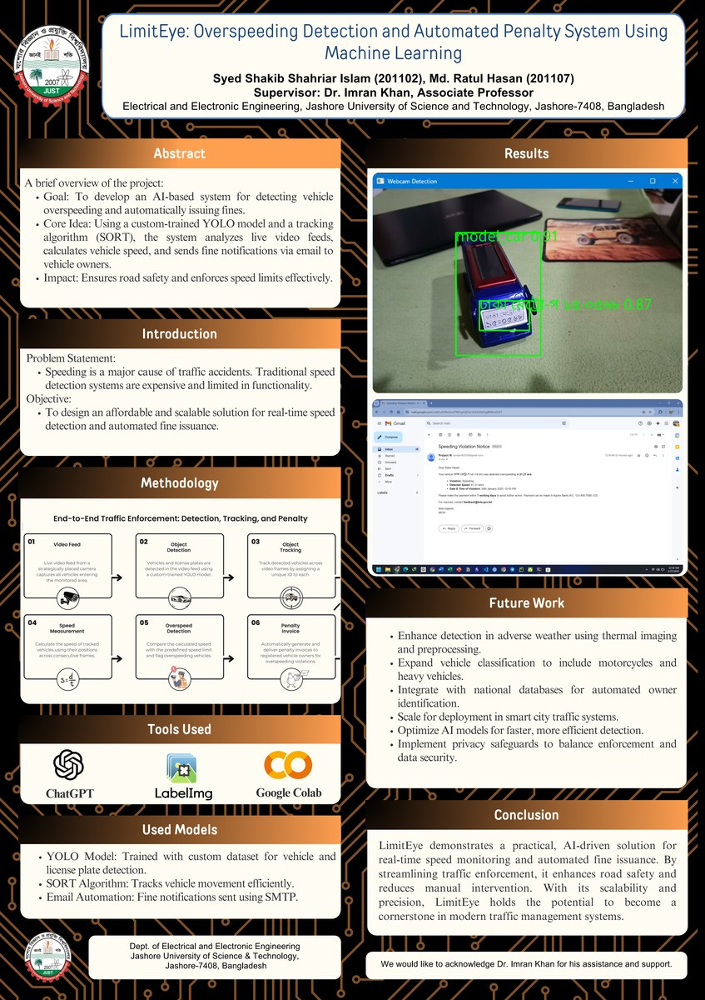